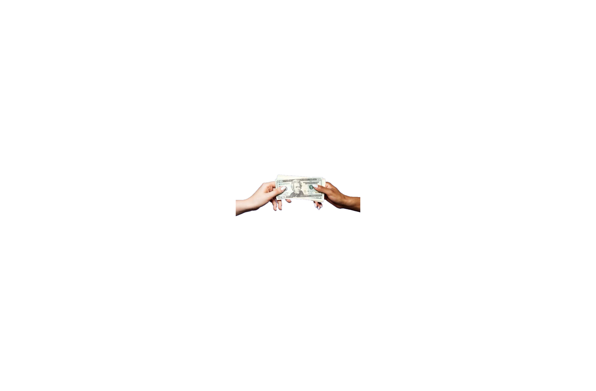
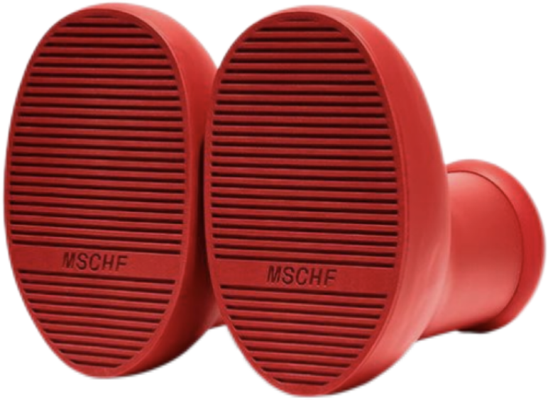
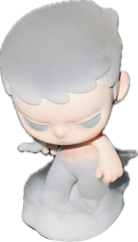
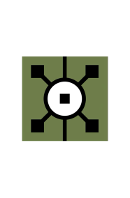
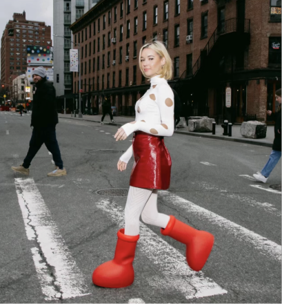

01
01PoopSlaves
Rule-based VR economic simulation
VR · Unreal Engine · Research · 2025Interaction designer · Creative technologist
I design strange, embodied systems that make hidden structures of value, culture and behaviour tangible.
我通过交互、影像与虚拟世界，让不可见的社会结构被身体感知。
 01
01Rule-based VR economic simulation
VR · Unreal Engine · Research · 2025
02Moving-image installation for reflective reinterpretation
Film · Installation · ACM C&C 2026
03An ecological experience of growth, saturation and collapse
Interactive installation · 2025 04
04Desire, display and the constructed appetite
Visual narrative · Awarded 2026 05
05A speculative interface for identity and clothing
Interaction · NCDA 2025Cultural symbolism reconstructed through contemporary media
Digital media · 2025
07More legible everyday experiences for older adults
Inclusive design · 2024
08A rural narrative drawn from distance and belonging
Illustration · NCDA National 2nd Prize
09A playful experiment in attention and digital behaviour
Digital media · 2024A digital perception system for Harbin’s historic pedestrian street
Heritage · Interaction · 2026A fictional economy in which bodily waste becomes a scarce, governable resource. Players can produce and trigger change, but cannot control how value is transferred, recalculated or accumulated.
This compact case focuses on one insight: agency of action does not guarantee agency of outcome.

Yutong Chen is an interaction designer and creative technologist working across embodied interaction, critical VR, moving image and installation. Her practice uses friction, discomfort and speculative systems to make abstract structures perceptible.
She studied Digital Media Art at Harbin Institute of Technology and joins the Royal College of Art’s Information Experience Design programme in 2026.